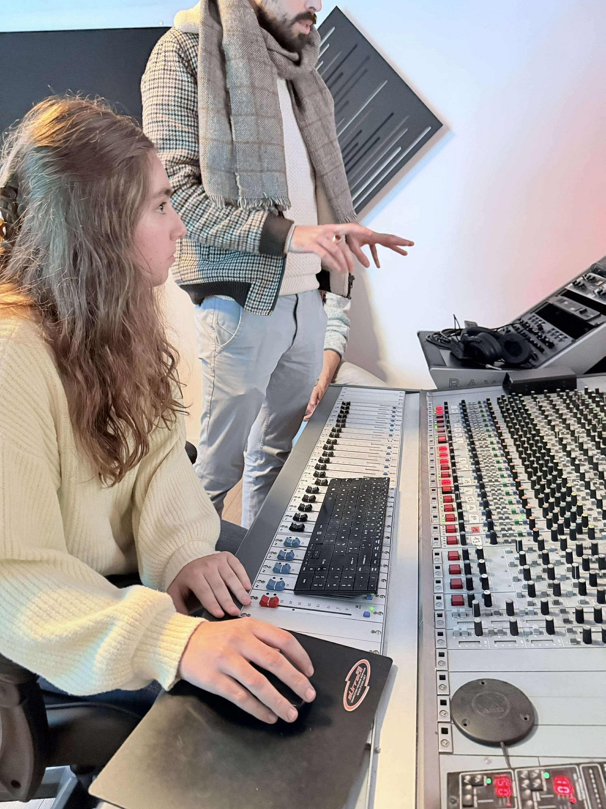
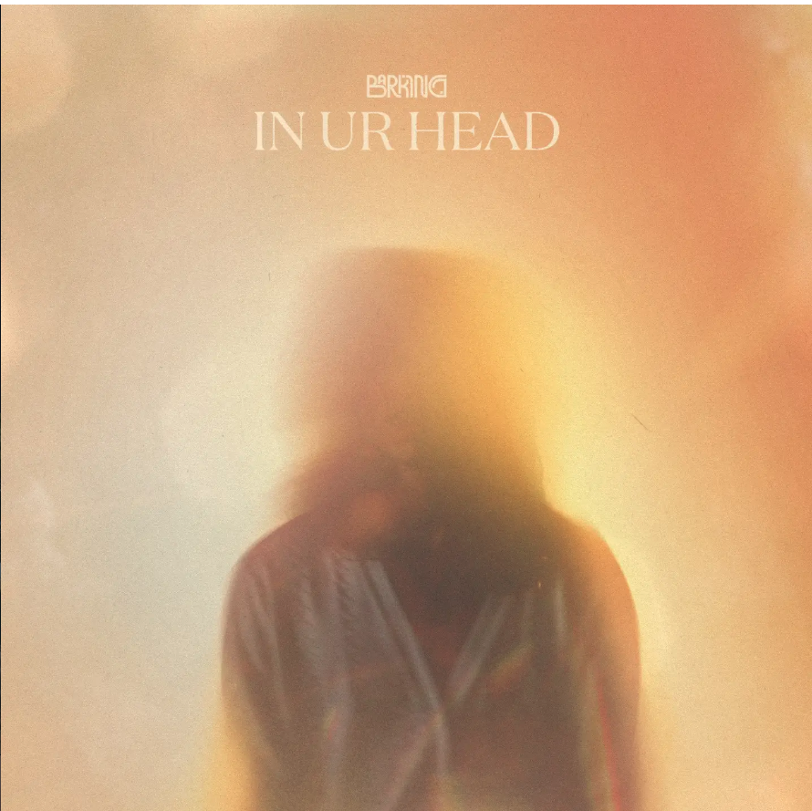
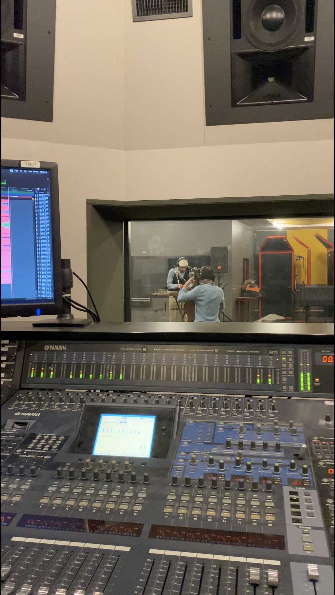
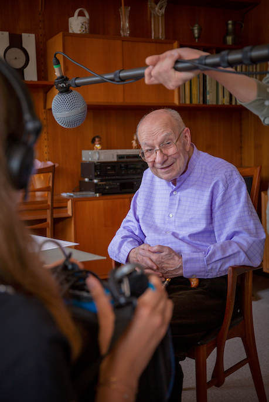
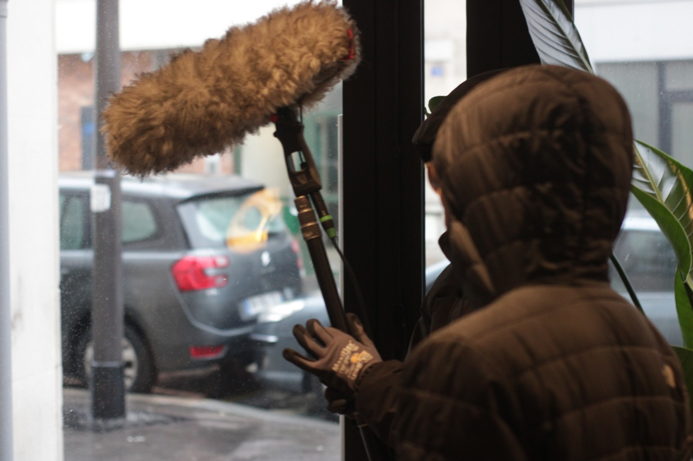
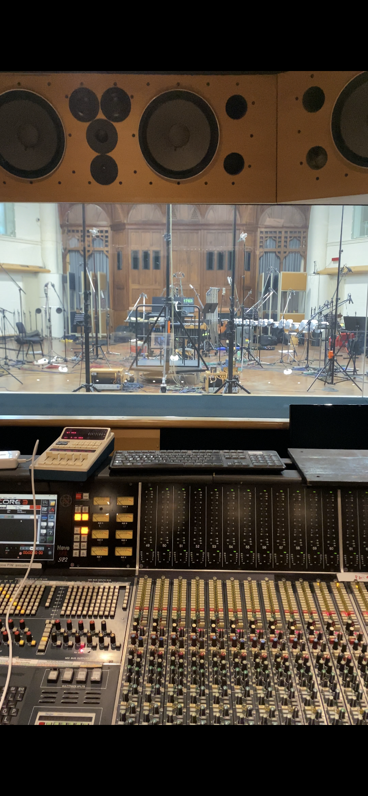

Cette page est un portfolio me présentant et contenant certains de mes derniers projets.
Dernière mise à jour : octobre 2026.
En deuxième année du Master Son de l’Ecole Nationale Supérieure Louis Lumière, je suis passionnée par les techniques du son et intéressée par tous les domaines du son : musique, spectacle vivant, son à l’image (cinéma, audiovisuel), radio, art sonore, etc. Je suis actuellement en recherche de stage.
Mes expériences professionnelles ont été jusqu’à aujourd’hui principalement dans le domaine musical : studio d’enregistrement et sonorisation (concerts et résidences). Par ailleurs, mon expérience à l’international (stage à Londres et études pendant un an à Montréal) a été une grande ouverture d’esprit pour moi.

Enregistrement, mixage et mastering du titre Tonight de Loric. Scénarisation et réalisation du clip associé. Projet d'études à Hesat Campus (2025).

Production d’un single pour le groupe de rock BARKING. Prise de son, mixage, mastering et direction artistique. Projet d'études à Hesat Campus (2025).

Enregistrement, mixage et mastering de plusieurs titres dans le cadre de live sessions filmées (2026).

Documentaire radiophonique qui retrace la vie de Daniel Nalesso, violoniste retraité de l'Orchestre de Paris. Réalisation : Mila Dobrijevic et Grégroire Proust. Diffusion en ligne par La Balise, la radio de la Philharmonie de Paris. Une production de l'École Nationale Supérieure Louis Lumière (2025).

Un court-métrage documentaire réalisé par Eva Giacometti. Prise de son, montage son et mixage. Une production de l'École Nationale Supérieure Louis Lumière (2025).

Et pleins d'autres à venir !